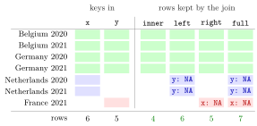

Relational Joins¶
Definition¶
A join combines two tables into one by matching rows that have the same values in one or more key columns, the columns that identify an observation in both tables (for example Country and Year). In a pipe, the table before the join is the left table x and the table inside the call is the right table y:
The four dplyr joins differ in which rows they keep:
| Join | Rows kept |
|---|---|
inner_join(x, y) |
only keys that appear in both tables |
left_join(x, y) |
all rows of x; columns from y are NA where y has no match |
right_join(x, y) |
all rows of y; columns from x are NA where x has no match |
full_join(x, y) |
all keys that appear in either table, with NA on the missing side |
If a row matches several rows of the other table, the result contains one row for each match.
Interpretation¶
Data for one question often come from different sources: emissions per country and year from one table, gross domestic product (GDP) and population from another. A join lines them up by key, so that every row of the result holds everything known about one country in one year, without relying on the two tables being in the same order.

The figure uses the tables of the Examples. Four country–years (green) are in both tables. The two Netherlands rows (blue) exist only in the emissions table and the France row (red) only in the GDP table. An inner join keeps the 4 green rows; a left join adds the 2 blue rows with NA for GDP and population; a right join adds the red row with NA for emissions; a full join keeps all . The labels y: NA and x: NA mark rows whose columns from the other table are filled with NA.
Which join to use is a decision about the analysis, not about syntax. If the emissions table is the main data set and GDP is extra information, left_join() keeps every emission observation even when GDP is missing. If a calculation needs both values, such as emissions per unit of GDP, inner_join() keeps only the rows where that is possible. In set language, the inner join keeps the intersection of the two key sets and the full join their union; the check x$Country %in% y$Country with the membership operator shows in advance which keys will match.
Getting the key wrong is the classic error. Joining by Country alone when both tables have several years per country matches every year of x with every year of y, so the number of rows multiplies and the year columns appear twice as Year.x and Year.y (Example 4). Always compare the number of rows before and after a join.
Key Results¶
by = c("Country", "Year")matches rows on both columns at once; a row matches only if all key columns agree exactly.- Row counts: inner ≤ left ≤ full and inner ≤ right ≤ full; when each key occurs at most once per table, a left join has exactly as many rows as
xand a right join as many asy. - New columns get
NAwhere a left, right or full join keeps a row that has no partner. - A key that occurs times in
xand times inygives rows in the result; dplyr warns about an unexpected many-to-many relationship. - Without
by, dplyr joins on all columns with the same name in both tables and prints a message naming them. - Columns with the same name that are not keys are kept twice, with suffixes
.xand.y.
Examples¶
The examples use two small made-up tables: total emissions per country and year, and GDP and population (in millions) per country and year.
library(tidyverse)
co2_total <- tibble(
Country = c("Belgium", "Belgium", "Germany", "Germany", "Netherlands", "Netherlands"),
Year = c(2020, 2021, 2020, 2021, 2020, 2021),
Total = c(44, 47, 266, 273, 59, 55)
)
gdp <- tibble(
Country = c("Belgium", "Belgium", "France", "Germany", "Germany"),
Year = c(2020, 2021, 2021, 2020, 2021),
GDP = c(525, 600, 2960, 3890, 4280),
Population = c(11.5, 11.6, 67.8, 83.2, 83.2)
)
1. Keeping all emission rows.
full_data <- co2_total %>% left_join(gdp, by = c("Country", "Year"))
full_data
#> # A tibble: 6 × 5
#> Country Year Total GDP Population
#> <chr> <dbl> <dbl> <dbl> <dbl>
#> 1 Belgium 2020 44 525 11.5
#> 2 Belgium 2021 47 600 11.6
#> 3 Germany 2020 266 3890 83.2
#> 4 Germany 2021 273 4280 83.2
#> 5 Netherlands 2020 59 NA NA
#> 6 Netherlands 2021 55 NA NA
The Netherlands has no GDP rows, so its two rows stay with NA in the new columns. France is not added: a left join never adds rows from the right table.
2. Comparing the four joins by size.
c(inner = nrow(inner_join(co2_total, gdp, by = c("Country", "Year"))),
left = nrow(left_join(co2_total, gdp, by = c("Country", "Year"))),
right = nrow(right_join(co2_total, gdp, by = c("Country", "Year"))),
full = nrow(full_join(co2_total, gdp, by = c("Country", "Year"))))
#> inner left right full
#> 4 6 5 7
3. A calculation after the join. Emissions per million inhabitants, averaged per country:
full_data %>%
mutate(Total_pc = Total / Population) %>%
group_by(Country) %>%
summarise(Total_pc = mean(Total_pc, na.rm = TRUE)) %>%
ungroup()
#> # A tibble: 3 × 2
#> Country Total_pc
#> <chr> <dbl>
#> 1 Belgium 3.94
#> 2 Germany 3.24
#> 3 Netherlands NaN
For Belgium, . For the Netherlands every value is NA, and the mean of no values is NaN ("not a number"): the left join kept the country, but the data cannot say anything about it.
4. Pitfall: an incomplete key.
wrong <- co2_total %>% inner_join(gdp, by = "Country")
#> Warning message:
#> In inner_join(., gdp, by = "Country") :
#> Detected an unexpected many-to-many relationship between `x` and `y`.
#> ℹ Row 1 of `x` matches multiple rows in `y`.
#> ℹ Row 1 of `y` matches multiple rows in `x`.
#> ℹ If a many-to-many relationship is expected, set `relationship =
#> "many-to-many"` to silence this warning.
nrow(wrong)
#> [1] 8
names(wrong)
#> [1] "Country" "Year.x" "Total" "Year.y" "GDP"
#> [6] "Population"
Each Belgian year in co2_total meets both Belgian years in gdp, giving rows for Belgium and 4 for Germany, half of them pairing 2020 emissions with 2021 GDP. With by = c("Country", "Year") the result has the correct 4 rows.
Prerequisites¶
Related Concepts¶
- Grouped Summaries
- Pivoting Between Wide and Long Data
- Membership Operator %in%
- Union and Intersection of Events
Sources¶
- Programming for EOR · Week 4
- Lecture 4 script, Data Wrangling with the tidyverse & Visualisation with ggplot2: Joining Multiple Tables (Relational Data); Week 4 solutions, exercises 8, 10 and 11
Aliases: join, joins, merge, merging tables, left_join(), inner_join(), right_join(), full_join(), key variable, relational data Keywords: key columns, left_join(), inner_join(), full_join(), unmatched rows get NA
Last updated: 10 November 2026 16:43
Relational JoinsTibbleCore dplyr VerbsMissing ValuesGrouped SummariesPivoting Between Wide and Long DataMembership Operator %in%Union and Intersection of Events